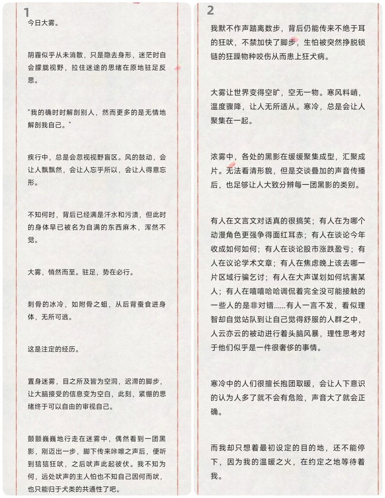
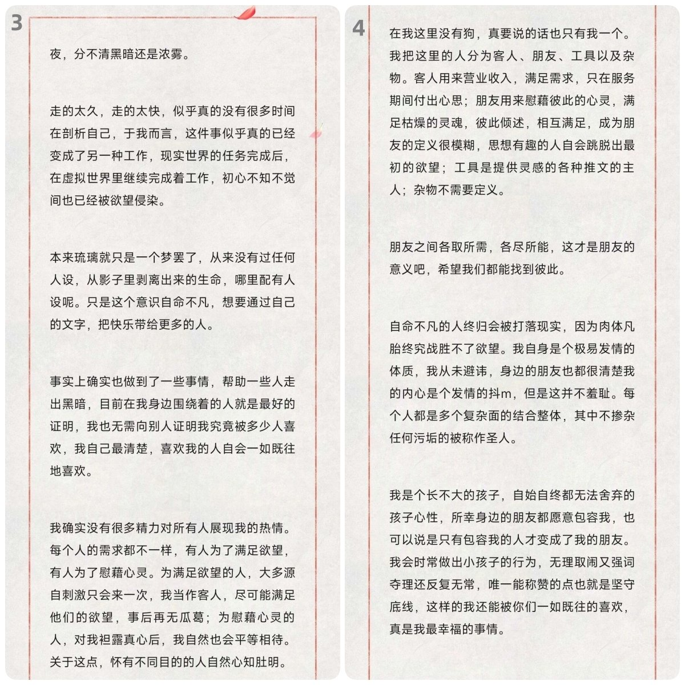
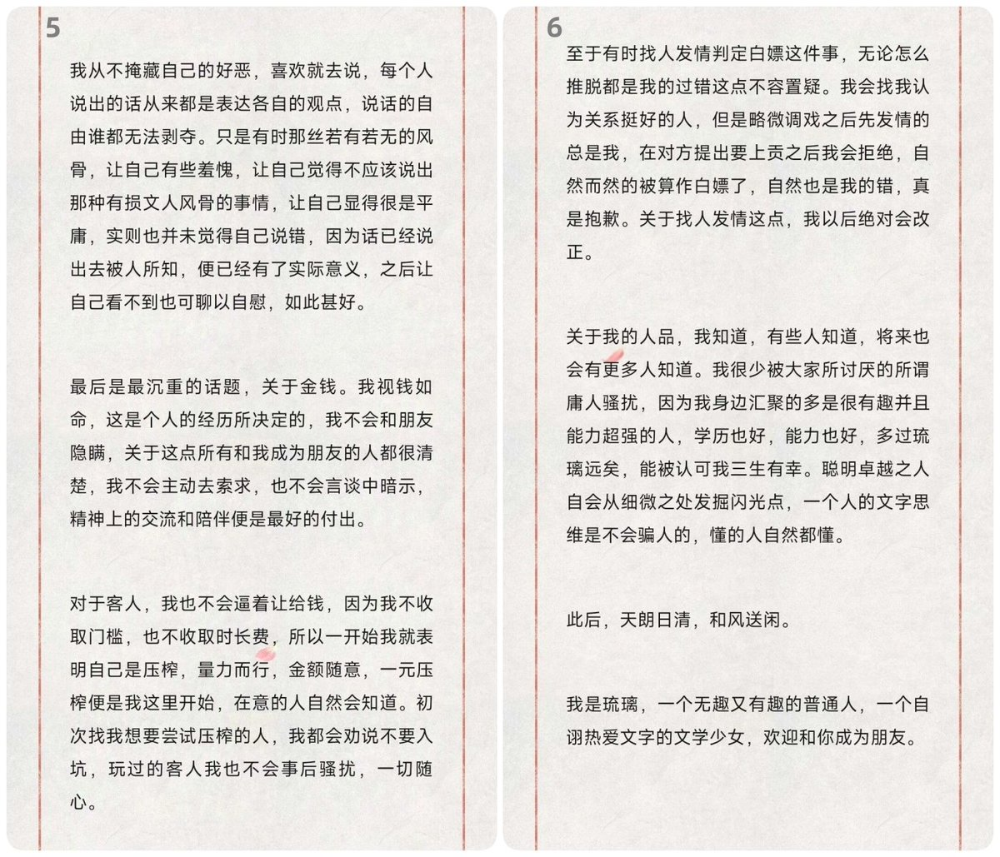

超可爱超绿茶超撩人的精灵魔女-奏奏💚
@xuemingjiai
RT @LiuliDreamm: 风波骤起还平，流言碎语闲听。心非冰魄澄明，幸有繁星相映。愿以此身，点星星之火，至风起微末。
大雾随笔，也算是投注心力，字斟句酌用时良久，若有意且有空余时间，可浅读一番。



琉璃梦
@LiuliDreamm
风波骤起还平，流言碎语闲听。心非冰魄澄明，幸有繁星相映。愿以此身，点星星之火，至风起微末。
大雾随笔，也算是投注心力，字斟句酌用时良久，若有意且有空余时间，可浅读一番。 https://t.co/JtLVEg0gLG